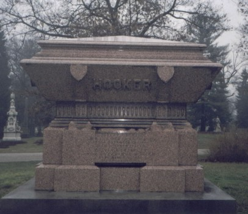
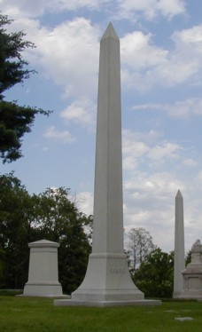

Cincinnati's flagship cemetery is Spring Grove, which is located north of downtown on Spring Grove Road, not far from I-75. Much like Greenlawn (Columbus), Lakeview (Cleveland), and Woodland (Dayton), Spring Grove is the kind of cemetery you can get lost in. Miles of roads and paths crisscross the hills of this 733-acre combined arboretum and park. There are twelve ponds of varying sizes and shapes. The largest, situated near the gates, is the centerpiece of the cemetery; mausoleums and chapels stand on the shore like lakefront houses. It's not just one of the nicest cemeteries you'll ever see, it's one of the prettiest natural settings.
The Cincinnati Horticultural Society established a graveyard here at a time when this area was considered the outskirts--close enough to be visited, but far enough out to ensure an idyllic setting and unimpeded expansion. The creation of a new cemetery was made necessary by a particularly bad cholera outbreak in the 1830s and 40s. The river and the canal made disease a way of life in Cincinnati at this time, and local churchyards filled up fast. Modeling it in part after Pere la Chaise in Paris, the Horticultural Society established Spring Grove as a non-profit nondenominational corporation. Salmon P. Chase, later Chief Justice of the U. S. Supreme Court, lobbied for the charter, which was granted by special act of the legislature on January 21, 1845. The first burial took place on September 1 of that same year.
The idyllic setting of the cemetery and careful attention paid to its upkeep made it a popular place to visit up through the twentieth century--more a park than a graveyard. The artistic "lawn plan" landscaping has been studied and imitated for more than a century. The arboretum contains numerous prizewinning trees and a large collection of centenarians. This is all aside from the aesthetics of the various memorials, many of which are quite unique. And the cemetery provides an animal sanctuary for birds, squirrels, and groundhogs. (Note the bats in the photo below.)
Spring Grove is packed to the gills with notable historical figures, including no less than thirty-four Civil War generals and ten governors from three states. Listed below are a few of the more remarkable names you'll find among the stones.
-
Salmon P. Chase
-
Probably the most important guy buried at Spring Grove (which somehow doesn't have a single president, even though three or four of them are from Hamilton County) is Salmon P. Chase, who was Senator from Ohio (1849-55), Governor of Ohio (1856-1860), Secretary of the Treasury under Abraham Lincoln (1861-1864), and Chief Justice of the Supreme Court (1864-1873). He was originally interred at Oak Hill Cemetery in Washington, DC, but was later moved back to Spring Grove--the cemetery he helped establish. Chase's portrait appears on the seldom-seen $10,000 bill.
-
Nicholas Longworth
-
Longworth, a Republican, represented Ohio's first district in Congress from 1903-13 and 1915-31. From 1925 through 1931 he was Speaker of the U.S. House of Representatives. He was married to Theodore Roosevelt's daughter Alice. One of the office buildings used by members of the House is named after him. His death came in 1936, before he had a chance to step down as Speaker following an election which put the Democrats in control of Congress.
-
Alphonso Taft
-
Patriarch of the Taft political dynasty. His son was William Howard Taft and his great-great-grandson is Ohio's current governor, Bob Taft. Alphonso himself was Secretary of War and Attorney General, as well as U.S. Minister to Austria-Hungary and Russia.
-
Jacob D. Cox
-
Ohio Governor, 1866-68; Secretary of the Interior, 1869-70.
-
Thomas Lowry Young
-
Ohio Governor, 1877-78.
-
George Hoadly
-
Ohio Governor, 1884-86.
-
Judson Harmon
-
Ohio Governor, 1909-13.
-
Myers Y. Cooper
-
Ohio Governor, 1929-31.
-
Alexander Long
-
U.S. Representative from Ohio's 2nd District, 1863-65. A Democrat from a northern state during the Civil War, Long was in a bad position. He was eventually censured by Congress for "treasonable utterances."
-
Jesse R. and Hannah Grant
-
Who's buried in Ulysses S. Grant's parents' tomb? His mom and dad. Grant himself was born in Point Pleasant, Clermont County, but is buried in New York.

-
William Cooper Procter and James Norris Gamble
-
They're not buried together, but their names will forever be linked by the monstrous manufacturing company they started as partners.
-
Bernard Kroger
-
Founded Kroger's grocery stores, which today is the largest chain of supermarkets in America.
-
Charles L. Fleischmann
-
Yeast manufacturer after whom the brand is named.
-
Stephen Gerrard
-
Pioneer in genetic engineering (the old-fashioned way) who gave us the Elberta peach and the Honeydew melon.
-
Alexander McGuffey
-
Children's textbook author who co-wrote the famous McGuffey Readers, which were widely used in grade schools through the 1980s.
-
George Crook and Joseph Thompson Hayes
-
The fourth and fifth children of Rutherford B. Hayes and his wife Lucy. Joseph, who died in 1863, was 2; George died in 1866 and was 1 1/2.
-
Joseph Hooker
-
Major General in the Civil War. Most people know him as the guy whose last name is now a widely-used term for a prostitute. Supposedly General Hooker liked whores so much that his men called his harem "Hooker's Brigade," but I have heard that this is probably apocryphal. More likely hookers are named for a section of old New York near the Five Points.

-
Judge Jacob Burnet
-
U.S. Senator, judge, and author of Ohio's first state Constitution.
-
The McCook Family
-
"The Fighting McCooks" gave eight sons members to the Union Army during the Civil War, four of whom became generals. Their family plot is located in Spring Grove, but only three of the sons--Robert, Alexander, and Edwin--are buried here.
Everybody who's anybody at Spring Grove has a personalized obelisk. Below are the obelisks for (left to right) Bernard Kroger, William Cooper Procter, and James Norris Gamble.

The mausoleums at Spring Grove are unique architectural works. Many are built into a hill or situated carefully beside a lake. Lots of them resemble cottages or cathedrals.
By far the most impressive building my now ex-girlfriend Katydid and I saw on our October 2002 trip to Spring Grove was the extremely gothic funerary chapel you see pictured here:
Naturally, there are some Spring Grove ghost stories. To read about them, click below.
SpringGrove.org - Official Site
Find-A-Grave: Spring Grove Cemetery
The Political Graveyard: Spring Grove Cemetery, Hamilton County, OH
Cincinnati Civil War Round Table: Spring Grove Cemetery
Spring Grove Lesson Plan
"Spring Grove Cemetery: Sanctuary for Living, Dead" - Cincinnati Post Article
Back
forgottenohio@yahoo.com